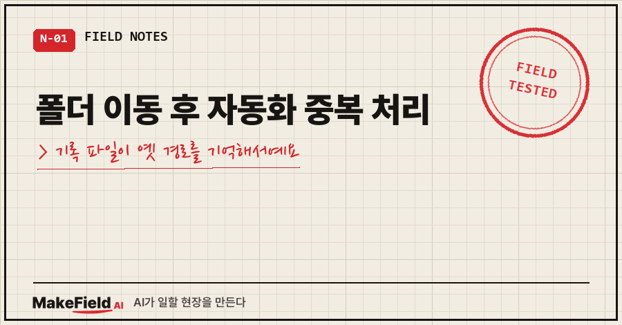
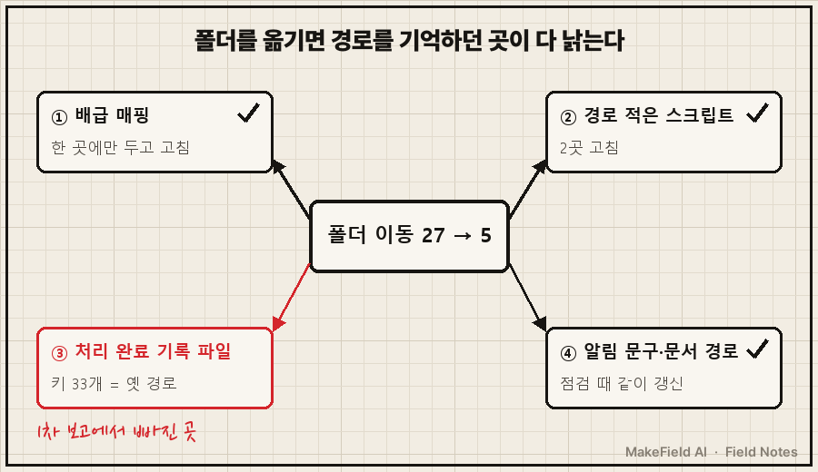
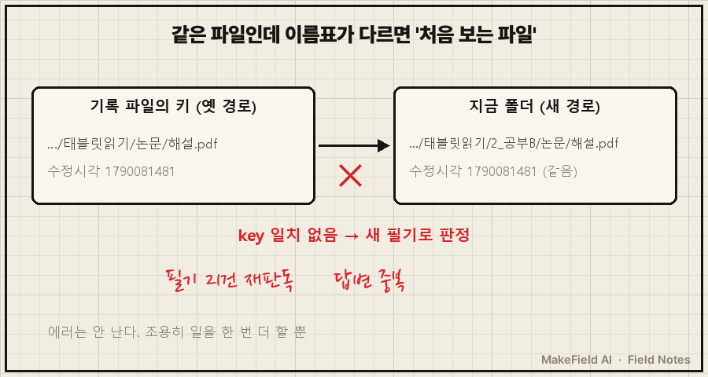
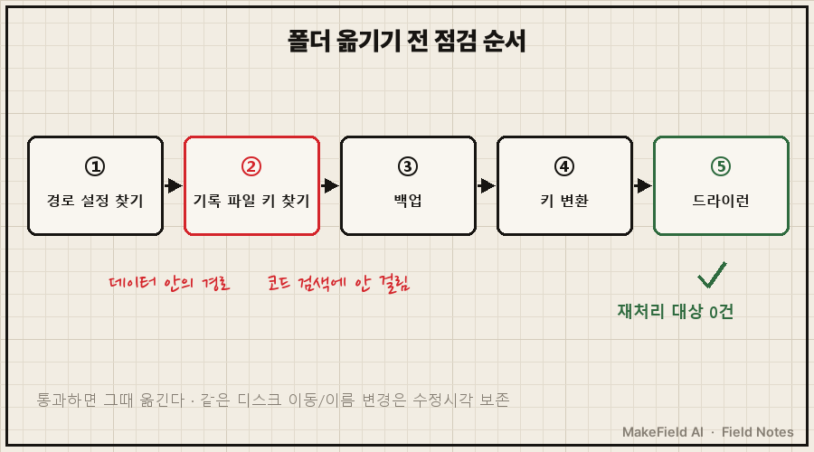

"전수체크해서 해줘야 하는 거 아닌가?"
폴더 정리가 끝났다는 AI 보고를 받고 제가 던진 한 줄이에요.
그 한 줄이 없었으면 다음 날 새벽, 자동화가 이미 처리한 필기 21건을 처음 보는 필기로 착각하고 전부 다시 처리할 뻔했습니다.
먼저 답부터요. 폴더 이동 후 자동화가 같은 파일을 또 처리한다면, '처리 완료' 기록 파일이 파일의 전체 경로를 이름표로 쓰고 있는지부터 보세요. 폴더를 옮기면 파일 내용은 그대로여도 경로가 바뀌고, 경로로 기억하던 기록 파일은 그 파일을 "처음 보는 파일"로 판정합니다. 이번에 제 기록 파일 2개에서 이런 이름표 33개가 한꺼번에 낡았어요.
설비 자동화로 15년 밥 벌어 온 엔지니어고, 퇴근 뒤엔 공부 자료를 AI가 매일 아침 태블릿 폴더로 보내 주게 해 두고 씁니다. 태블릿에서 그 자료에 펜으로 질문을 적어 두면, 새벽에 다른 스크립트가 필기를 읽고 답을 달아 줘요. 이번 글은 그 폴더를 정리하다 생긴 일이에요.
1. 폴더 27개를 5개로 묶었을 뿐인데
자료가 쌓이다 보니 태블릿 읽기 폴더 맨 위에 하위 폴더가 27개가 됐어요.
그래서 AI한테 "상위 카테고리 만들어서 정리해 줘"라고 했죠.
AI는 27개를 5개 상위 폴더(공부 둘, 업무, 연구·글쓰기, 기타) 아래로 옮겼어요.
여기까진 꽤 잘했습니다. 함정 하나를 미리 잡았거든요.
- 폴더만 옮기면 다음 날 05:30 배급 스크립트가 옛 이름 폴더를 맨 위에 다시 만든다
- 그래서 "어떤 자료는 어느 상위 폴더로" 매핑을 배급 스크립트 한 곳에만 두고, 그걸 부르는 쪽 4곳은 안 건드림
- 매핑에 없는 새 자료는 기본값 '기타'로 가게 해서 맨 위가 다시 어질러지지 않게
경로를 직접 적어 둔 다른 스크립트 2곳도 같이 고쳤고요.
"다 옮겼습니다" 보고가 왔고, 저도 거의 넘어갈 뻔했어요..

2. 기록 파일은 경로를 이름표로 쓰고 있었어요
전수 점검을 다시 시키자 나온 게 이거예요.
필기 판독 스크립트에는 "이 파일은 이미 읽었다"를 적어 두는 기록 파일이 2개 있었는데, 둘 다 옛 전체 경로를 키로 쓰고 있었습니다. 하나는 22개, 하나는 13개.
판독 스크립트가 새 필기를 고르는 조건은 이랬어요(실제 코드에서 두 줄만 옮김).
key = str(p) # 파일의 전체 경로가 곧 이름표
if force or state.get(key) != mt: # 기록에 없거나 수정시각이 다르면 '새 필기'
targets.append((p, mt))구조를 단순하게 보면 기록 파일 안은 이런 모양이에요(경로·파일명은 바꿔 적었어요).
{
"D:\\태블릿읽기\\논문\\2026-09-19_해설.pdf": 1790081481
}폴더를 옮기면 같은 파일이 이렇게 불려요.
D:\태블릿읽기\2_공부B\논문\2026-09-19_해설.pdf파일도 같고 수정시각도 같은데, 이름표가 달라서 state.get(key)가 빈손으로 돌아옵니다. 그러면 새벽 06:10에 판독기가 필기 21건을 전부 새 필기로 보고 다시 읽어요. 답변이 두 번씩 달리고, 제 질문을 모아 두는 입력 파일에도 같은 내용이 또 붙었겠죠.

3. 고친 순서: 백업 → 키 변환 → 드라이런
고친 건 이 순서였어요.
- 기록 파일 2개를 날짜 붙여 백업
- 키 33개(22+13)를 새 경로로 변환
- 알림 문구와 문서 속 옛 경로도 새 경로로 갱신
- 실제로 돌리지 않고 결과만 보는 드라이런으로 확인
판독기 드라이런 결과는 이 한 줄이었어요.
[없음] 새 필기 없음 (감지 21건, 판독완료 22건)재판독 대상 0건. 필기가 있는 파일 21개를 다 찾았고, 그중 다시 읽을 건 없다는 뜻이에요.
여기서 하나 더 확인할 게 있었어요. 판독기는 경로 말고 수정시각도 보거든요. 그런데 폴더를 같은 디스크 안에서 옮기거나 이름만 바꾸면 수정시각은 그대로 남아요. 실제로 필기 감지 21건이 옮긴 뒤에도 그대로 잡혔고요. 만약 옮기는 과정에서 수정시각이 새로 찍혔다면, 키를 고쳐도 21건이 다시 '새 필기'가 됐을 거예요.
4. 왜 기록 파일만 1차 점검에서 빠졌을까
배급 매핑이나 경로를 적은 스크립트는 "폴더 경로"를 설정으로 들고 있어요. 찾기 쉽죠.
기록 파일은 경로를 데이터로 들고 있습니다. 코드에서 폴더 이름을 검색해도 안 걸리고, 깨져도 에러 없이 "새 파일이 생겼네" 하고 조용히 일을 더 해요.
여러분 자동화에도 "이미 보냈음·이미 처리함"을 적어 두는 파일이 있으신가요? 그 파일의 키가 전체 경로라면, 폴더 정리 한 번에 전부 '처음 보는 파일'이 됩니다.
결과만 놓고 보면 선택지는 셋이었어요.
| 방법 | 장점 | 단점 |
|---|---|---|
| 기록 파일 키를 새 경로로 변환 (이번 선택) | 지금 바로, 재처리 0건 | 다음 정리 때 또 해야 함 |
| 기록 파일 초기화 | 제일 간단 | 21건 재판독·답변 중복을 그대로 맞음 |
| 키를 상대 경로로 바꾸기 | 폴더를 옮겨도 덜 깨짐 | 코드 수정 + 기존 기록 이관 필요 |
세 번째가 근본책이에요. 파이썬 공식 문서도 os.path.relpath를 "Return a relative filepath to path either from the current directory or from an optional start directory."(기준 폴더에서 본 상대 경로를 돌려준다)라고 설명하는데, 키를 읽기 폴더 기준 상대 경로로 두면 맨 위 폴더 위치가 바뀌어도 키가 안 변해요. 다만 이번처럼 하위 폴더를 한 단계 아래로 넣는 정리면 상대 경로도 바뀝니다. 그래서 저는 아직 안 바꿨어요. 지금은 폴더를 옮길 땐 기록 파일부터 본다를 순서로 박아 두는 쪽입니다.
5. 폴더 이동 후 자동화가 안 깨지게, 옮기기 전 체크리스트

- [ ] 폴더 경로를 설정으로 가진 스크립트 목록 (매핑·하드코딩 경로)
- [ ] 경로를 키로 쓰는 기록 파일 목록 (처리 완료·발송 완료·읽음 표시)
- [ ] 기록 파일 백업 후 키 변환
- [ ] 알림 문구·문서 속 옛 경로
- [ ] 드라이런에서 "재처리 0건" 확인
- [ ] 옮기는 방식이 수정시각을 보존하는지 (같은 디스크 이동·이름 변경)
기록 파일 찾을 땐 코드 말고 데이터 파일 안을 옛 폴더 이름으로 검색해 보세요. 예를 들면 이렇게요.
Select-String -Path .\*.json -Pattern "태블릿읽기\\\\논문" -List자주 묻는 질문
Q. 폴더 이름만 바꿔도 같은 문제가 생기나요?
네. 이름 변경도 경로가 바뀌는 거라 전체 경로를 키로 쓰는 기록 파일은 똑같이 깨져요. 대신 수정시각은 보존돼서, 키만 고치면 됩니다.
Q. AI한테 처음부터 "전수 체크해"라고 시키면 되지 않나요?
그게 맞는 순서예요. 이번엔 1차 보고 뒤에 다시 시켜서야 나왔어요. 처음 요청에 "경로를 기억하는 파일까지"를 넣었으면 한 번에 끝났을 일입니다.
Q. 이미 중복 처리가 돼 버렸으면요?
백업해 둔 옛 기록 파일과 새 기록 파일을 비교하면 중복으로 처리된 파일 목록이 나와요. 이번엔 다행히 그 전에 막아서 해 보진 않았습니다.
정리는 파일을 옮기는 일이 아니라, 경로를 기억하는 모든 것을 찾는 일이었어요. 1차에서 놓친 곳은 결국 에러를 내지 않는 쪽이었습니다.
태블릿으로 공부 자료를 받고 필기에 답을 달게 만든 과정은 makefield.ai에서 이어서 보실 수 있어요.
출처
- Python 공식 문서, os.path.relpath("Return a relative filepath to path either from the current directory or from an optional start directory.") → https://docs.python.org/3/library/os.path.html (2026-11-18 확인)
- 실측: 2026-11-16 개인 공부 자동화 폴더 정리·기록 파일 점검 기록(경로·계정·파일명 제외)
태그: #폴더이동후자동화 #폴더정리 #자동화중복처리 #처리완료기록 #상태파일 #파일경로 #상대경로 #파이썬자동화 #스크립트오류 #폴더이름변경 #수정시각 #드라이런 #자동화만들기 #AI자동화 #MakeFieldAI